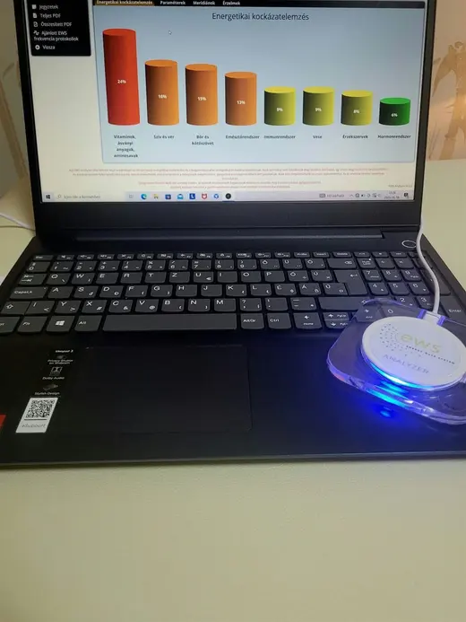

Ildikó Egészség és Masszázs Sziget
Testi-lelki egyensúly természetes megoldásokkal
Masszázsok, aromaterápia, alakformálás, BEMER érterápia és wellness-felmérések Szeged belvárosában.
- 18 kezelés és felmérés
- doTERRA illóolajok
- Időpont egyeztetéssel
Kezelések
Egy sziget, több út a feltöltődéshez
Koppints egy kezelésre, és megnyílik a részletes leírás.
Masszázs & relax
Érintések a frissebb, könnyedebb közérzetért.
 Gyúró, izomlazító masszázs
Letapadt, feszes izmok fellazítása – nyak, váll, derék.
Gyúró, izomlazító masszázs
Letapadt, feszes izmok fellazítása – nyak, váll, derék.
A mindennapi stressz, az ülőmunka, a fizikai terhelés és a helytelen testtartás gyakran vezet izomfeszüléshez, fájdalomhoz és mozgásbeszűküléshez. A kezelés célja a letapadt, feszes izmok fellazítása, a vérkeringés fokozása és az izmok regenerációjának támogatása.
Segíthet csökkenteni a nyak-, váll- és derékfájdalmakat, és javíthatja a mozgás szabadságát. Ideális ülőmunkát vagy fizikai munkát végzőknek és sportolóknak.
 Frissítő, relaxáló masszázs
Stressz és fáradtság ellen, a testi-lelki feltöltődésért.
Frissítő, relaxáló masszázs
Stressz és fáradtság ellen, a testi-lelki feltöltődésért.
Stressz, fáradtság, feszes nyak- és hátizmok? A frissítő, relaxáló masszázs segít ellazítani a túlterhelt izmokat, enyhíteni a mindennapi feszültséget, és támogatja a testi-lelki feltöltődést.
A kellemes masszázsfogások elősegítik a relaxációt, javíthatják a közérzetet, és segítenek kiszakadni a rohanó hétköznapokból.
 Nyirokmasszázs
Gyengéd, ritmikus mozdulatok a nyirokáramlás támogatására.
Nyirokmasszázs
Gyengéd, ritmikus mozdulatok a nyirokáramlás támogatására.
A nyirokmasszázs gyengéd, ritmikus mozdulatokkal támogatja a nyirokfolyadék áramlását, és segíti a szövetek közötti folyadék elvezetését.
Megfelelő alkalmazás esetén hozzájárulhat a duzzanat mérsékléséhez, különösen nyiroködéma kezelésében.
Talpmasszázs A talp zónáinak masszírozása – lelassulás, feszültségoldás.
A talpon lévő zónák masszírozása reflexhatást válthat ki, miközben segít lelassulni és kiengedni a nap végére felgyűlt feszültséget. A lábon több tízezer idegvégződés található, ezért a talpmasszázs az egész testre kellemesen ható élmény lehet.
- Támogathatja a vérkeringés élénkebb működését.
- Segíthet a feszültségoldásban.
- Jó választás első masszázsélménynek is.
 Köpölyözés
Ősi, vákuumos technika a véráramlás fokozására.
Köpölyözés
Ősi, vákuumos technika a véráramlás fokozására.
A köpölyözés egy ősi technikán alapuló kezelés, amely során a köpölyök vákuumhatással megemelik a bőrt és az alatta lévő szöveteket.
- Fokozza a helyi véráramlást.
- Segíthet az izmok ellazításában.
- Így csökkentheti a fájdalmat.
Access Bars® Gyengéd érintések a fejen a mély ellazulásért.
Egész nap fáradt vagy, miközben az agyad túlpörög?
Az Access Bars® egy gyengéd érintéseken alapuló relaxációs módszer, amely során a fej meghatározott pontjait finoman érintjük. A módszer célja a mély ellazulás elősegítése, a stresszes hétköznapokból való kiszakadás és a nyugodt, befelé figyelő állapot megteremtése.
- Sokat stresszelsz, aggódsz?
- Nehezen kapcsolsz ki a nap végén?
- Vágysz egy kis csendre a fejedben?
- Mély relaxáció
- Stresszoldó élmény
- Tisztább, rendezettebb gondolatok
- Befelé figyelő, nyugodt állapot
Aromaterápia
Amikor az érintés és az illatok találkoznak.
 doTERRA AromaTouch®
Nyolc illóolaj és harmonikus érintések – illatos utazás.
doTERRA AromaTouch®
Nyolc illóolaj és harmonikus érintések – illatos utazás.
Engedd el a külvilág zaját, és merülj el a nyugalom különleges világában! 🌿
A nyolc gondosan kiválasztott doTERRA illóolaj és a gyengéd, harmonikus érintések egyedülálló élménnyé varázsolják ezt a kezelést. Segít ellazulni, lelassulni, és olyan különleges, békés lelkiállapotba kerülni, ahol végre önmagadra figyelhetsz.
Nem csupán egy masszázs, hanem egy illatos utazás a testi-lelki harmónia felé. Add át magad az élménynek, és tapasztald meg a valódi kikapcsolódást!
A nyolc olaj
- Balance
- Lavender
- Melaleuca (Tea Tree)
- On Guard
- AromaTouch
- Deep Blue
- Wild Orange
- Peppermint
doTERRA aromaterápiás masszázs Masszázsfogások és illóolajok harmóniája.
Lépj ki a hétköznapok rohanásából, és merülj el az illatok különleges világában! 🌿
A kellemes masszázsfogások és a gondosan kiválasztott doTERRA illóolajok harmonikus találkozása segít megteremteni a nyugalom és az ellazulás pillanatait. Az illatok hatással lehetnek a hangulatodra, támogathatják a relaxációt, és különleges érzékszervi élménnyé tehetik a masszázst.
Több mint kikapcsolódás: egy illatos utazás, ahol a tested ellazul, a lelked pedig megpihen. Engedd, hogy az érintés és az illatok harmóniája feltöltsön!
Arc & fej
Énidő, ragyogás és könnyű fej.
 SPA Prémium arckezelés
Arctisztítás, RF-kezelés, gua sha és illóolajok.
SPA Prémium arckezelés
Arctisztítás, RF-kezelés, gua sha és illóolajok.
Szeretnél üdébb, ragyogóbb arcbőrt és egy igazán különleges énidőt? A kezelés során az arctisztítást, a gondosan kiválasztott doTERRA illóolajokat, a rádiófrekvenciás (RF) kezelést és a gua sha arcmasszázst ötvözzük egy komplex, kényeztető élményben.
🌿 Miben segíthet?
- RF-kezelés: hozzájárulhat a bőr feszesebb megjelenéséhez.
- Gua sha: gyengéd masszázstechnikával segítheti az arc ellazulását, és frissebb, üdébb megjelenést kölcsönözhet.
- doTERRA illóolajok: különleges aromaterápiás élménnyé varázsolják a kezelést.
Energetizáló fejmasszázs gua shával Ha zsong a fejed: finom simítások a fejbőrön és a nyakon.
Zsong a fejed, feszült vagy, és úgy érzed, szükséged van egy kis kikapcsolódásra? A gyengéd fejmasszázs és a gua sha eszközzel végzett, finom simító mozdulatok segíthetnek ellazítani a fejbőr és a nyak környékét, enyhíteni a mindennapi feszültségérzetet, és kellemes, frissítő élményt nyújthatnak.
🌸 Miben segíthet?
- Elősegíti a relaxációt és a testi-lelki ellazulást.
- Segít enyhíteni a fej, a nyak és a váll környékén érzett feszültséget.
- Serkenti a kezelt terület helyi vérkeringését.
- Segít kiszakadni a mindennapi rohanásból, és újra önmagadra figyelni.
Alakformálás
Vágás és műtét nélkül a feszesebb, simább bőrért – comb, fenék, csípő, has.
Cellulitmasszázs Intenzív fogások, krémek és köpölyözés a narancsbőr ellen.
Célzott, intenzív masszázsfogásokkal segíti a helyi vér- és nyirokkeringést, valamint a szövetek mobilizálását. A kezelést speciális, zsírégetőként forgalmazott krémekkel és köpölyözéssel egészítjük ki, hogy fokozzuk az intenzitását és támogassuk a bőr megjelenésének javítását.
A comb, a fenék és a csípő területére összpontosító kezelés segíthet mérsékelni a narancsbőrt, és hozzájárulhat a simább bőrfelszínhez.
 Maderoterápia
Masszázs anatómiai kialakítású faeszközökkel.
Maderoterápia
Masszázs anatómiai kialakítású faeszközökkel.
Speciális, anatómiai kialakítású faeszközökkel végzett masszázstechnika. A célzott, ritmikus mozdulatok serkentik a kezelt terület helyi vérkeringését, segítik a szövetek mobilizálását, és hozzájárulnak a bőr simább, feszesebb megjelenéséhez.
A kezelés során elsősorban a comb, a fenék és a csípő területére összpontosítunk.
 Kavitációs zsírbontás
Ultrahangos alakformálás a lokális zsírpárnákra.
Kavitációs zsírbontás
Ultrahangos alakformálás a lokális zsírpárnákra.
Vágás és műtét nélküli esztétikai és alakformáló eljárás, amely a lokális zsírpárnák és a narancsbőr csökkentésére szolgál.
Hogyan működik?
- Ultrahangos hullámok A berendezés alacsony frekvenciájú (általában 36–40 kHz körüli) ultrahangot bocsát ki, amely mikrobuborékokat hoz létre a zsírsejtek közötti térben.
- Sejtfal roncsolása A buborékok összeroppanásakor keletkező nyomásváltozás (kavitáció) megroppantja a zsírsejtek membránját.
- Kiürülés A felszabaduló zsírok és trigliceridek a nyirokrendszeren és a véráramon keresztül a májba jutnak, ahol lebomlanak, majd a vizelettel távoznak a szervezetből.
 Lipolézer + RF bőrfeszesítés
Fájdalommentes zsírbontás és feszesítés egyben.
Lipolézer + RF bőrfeszesítés
Fájdalommentes zsírbontás és feszesítés egyben.
A lipolézeres zsírbontás és a rádiófrekvenciás (RF) bőrfeszesítés kombinációja egy fájdalommentes, nem invazív (sebészeti beavatkozás nélküli) alakformáló eljárás, amely a zsírsejtek ürítését és a bőr feszesítését célozza.
Hogyan működik a kezelés?
- Lipolézer: alacsony intenzitású lézerfényt használ, amely megnyitja a zsírsejtek falát, így a bennük lévő zsírsavak és trigliceridek kiürülnek a sejtek közötti térbe, majd a nyirokrendszeren keresztül távoznak.
- Rádiófrekvencia (RF): hőenergiával stimulálja a mélyebb rétegek kollagén- és elasztintermelését, ami feszesíti a megnyúlt, petyhüdt bőrt, és segít a narancsbőr (cellulit) csökkentésében.
- A kombináció előnye: a lipolézer kiüríti a zsírpárnákat, míg az RF megakadályozza, hogy a bőr a lefogyott centik után megereszkedjen.
Regeneráció
A mikrokeringés és a mozgás támogatása.
 BEMER fizikai érterápia
Vérkeringés-javítás felsőfokon – a mikrokeringés támogatása.
BEMER fizikai érterápia
Vérkeringés-javítás felsőfokon – a mikrokeringés támogatása.
Vérkeringés-javítás felsőfokon! A mikrokeringés támogatása természetes módon.
A BEMER egy innovatív, pulzáló elektromágneses mezőt alkalmazó orvostechnológiai eszköz, amely célzottan támogatja a szervezet mikrokeringését, ezáltal hozzájárulhat a sejtek megfelelő oxigén- és tápanyagellátásához, valamint a szervezet természetes regenerációs folyamataihoz.
Milyen területeken nyújthat kiegészítő támogatást?
- Ízületi, izom- és mozgásszervi fájdalmak esetén
- Neurológiai és belgyógyászati problémák kiegészítő támogatására
- Cukorbetegség esetén, a mikrokeringés támogatására
- Migrénes fejfájás esetén
- Sérülések és műtétek utáni regeneráció támogatására
- Sebgyógyulás elősegítésére
- Fáradtság, kimerültség és stressz esetén
- Alvásproblémák esetén
- Depresszió esetén
- Az immunrendszer és a vitalitás támogatására
Miben segíthet a BEMER?
- A mikrokeringés támogatása
- Elősegítheti a kis erek természetes működését, ezáltal hozzájárulhat a szövetek megfelelő oxigén- és tápanyagellátásához.
- A regeneráció támogatása
- Segítheti a sejtek anyagcsere-folyamatait és a szervezet regenerációját.
- Mozgásszervi panaszok enyhítése
- Kiegészítő terápiaként alkalmazható izommerevség, ízületi panaszok és mozgásszervi fájdalmak esetén.
- Sebgyógyulás támogatása
- Hozzájárulhat a szervezet természetes regenerációs folyamataihoz.
- Sport és fizikai aktivitás
- Támogathatja az edzést követő regenerációt és a fizikai terhelhetőséget.
- Fáradtság és stressz
- A kezelések során sokan a testi ellazulást, a pihenést és az általános közérzet javulását tapasztalják.
Miért érdemes kipróbálni?
A BEMER kezelés kényelmes, fájdalommentes, pihentető eljárás, amely a szervezet saját működésének támogatására összpontosít. Gyógyszermentes, kiegészítő lehetőséget kínálhat azok számára, akik szeretnének tudatosabban odafigyelni egészségükre, regenerációjukra és vitalitásukra.
 Kineziológiai tape
Rugalmas tapasz az izmok és ízületek támogatására.
Kineziológiai tape
Rugalmas tapasz az izmok és ízületek támogatására.
Fájdalom, izomfeszülés vagy túlterhelt ízületek nehezítik a mindennapjaidat?
A kineziológiai tapasz egy rugalmas, bőrre ragasztható szalag, amely a megfelelő technikával felhelyezve kiegészítő támogatást nyújthat az izmok és ízületek számára, miközben lehetővé teszi a természetes mozgást.
✨ Miben segíthet?
- Enyhítheti bizonyos mozgásszervi panaszok fájdalomérzetét.
- Támogathatja az izmok és ízületek mozgás közbeni működését.
- Segíthet a duzzanat mérséklésében megfelelő nyiroktapaszolási technikával.
- Kiegészítő segítséget nyújthat sportolás és fizikai terhelés során.
Felmérések
Ismerd meg jobban a szervezeted jelzéseit.
 iTOVi mérés
Melyik doTERRA illóolaj illik hozzád? Derítsük ki!
iTOVi mérés
Melyik doTERRA illóolaj illik hozzád? Derítsük ki!
Fedezd fel, mely doTERRA illóolajok illenek hozzád! 🌿
Több tucat illóolajad van otthon, de nem tudod, melyiket válaszd? Vásárlás előtt szeretnéd jobban megismerni az olajokat, és tudatosabban eligazodni közöttük?
Az iTOVi egy különleges, biorezonanciás wellnesseszköz, amely a galvanikus bőrválasz (GSR) mérésével vizsgálja a bőr elektromos vezetőképességének változásait. A mérés alapján személyre szabottan megmutatja, hogy az adott pillanatban mely vizsgált doTERRA illóolajokra és wellness-termékekre reagált erősebben a szervezeted.
🌸 Mire jó az iTOVi-mérés?
- Segít tudatosabban kiválasztani a számodra érdekes termékeket.
- Akkor is hasznos lehet, ha már sok olajad van, de bizonytalan vagy a felhasználásukban.
- Támogatja az illóolajokkal kapcsolatos ismereteid bővítését és a személyes wellnessrutinod kialakítását.
- Nem kell találomra választanod!
Az iTOVi-mérés wellnesscélú tájékoztatás, nem orvosi vizsgálat. Az eredmények nem helyettesítik az egészségügyi szakember tanácsát.

EWS Analyzer felmérés
Állapotfelmérés kevesebb, mint egy perc alatt.
Az EWS Analyzer készülékkel lehetőség nyílik arra, hogy – még a betegség kialakulása előtt – képet kapjunk a szervezetben történő változásokról. Az elektromágneses hullámok, melyek az emberi szervezetből távoznak, pontosan utalnak a test állapotára!
Az EWS Analyzer előnyei
- Kevesebb, mint egy perc alatt szolgáltat információt a test állapotáról.
- Rendkívül könnyen és gyorsan láthatóvá válnak a szervezetben végbemenő folyamatok, még azt megelőzően, hogy biokémiai vagy strukturális szinten a problémák megjelennének.
Kiknek ajánlott?
- Hajszolt és stresszes életmódot folytató személyeknek, akik szeretnének gyors és komplex elemzést kapni egészségi állapotukról energetikai és fizikai szinten.
- Fáradtságban vagy alvászavarban szenvedőknek, akik szeretnék tudni, milyen egyensúlyvesztésből származik a problémájuk.
- Fellépő hormonzavarok esetében, főleg nőknél (hajhullás, hízás, ödémára való hajlam, pajzsmirigy-, illetve hasnyálmirigy-működési panaszok).
- Mozgásszervi panaszok során (kopás, ízületi gyulladás), ha szeretnéd ismét lendületbe hozni magad.
- Állandó puffadás, az emésztőrendszeri zavarok hátterében meghúzódó okok feltérképezésére.
- A szív- és érrendszeri betegségek mögött húzódó tényezők feltárására.
- Makacs testzsírok esetében, ha szeretnéd tudni, milyen tényezők hátráltatnak a leolvasztásukban.
Milyen területekről kaphatunk információt?
- Szív és vérkeringési rendszer
- Emésztőrendszeri funkciók
- Máj és epe funkciók
- Szív és agyi keringési rendszer
- Hasnyálmirigy funkciók
- Vese funkciók
- Tüdő funkciók
- Agy és idegek
- Csont
- Meridiánok
- Reumás csontbetegség
- Vércukor
- Fizikai állapot
- Mérgek, toxinok
- Nyomelemek, vitaminok
- Prosztata
- Mell analízis
- Férfi szexuális funkciók
- Nőgyógyászat
- Bőr
- Hormonrendszer
- Immunrendszer
- Nehézfémek
- Szem funkciók
- Elhízás
- Aminosavak
- Fül
- Allergének
- Pajzsmirigy
- Koenzimek
- Kötőszövet, kollagén
- Paraziták
- Lelki állapot
A tesztelés legfontosabb szabályai
- Ne igyon tesztelés előtt kb. 2 órával alkoholt, kávét és egyéb serkentő hatású italokat!
- Ha megterhelő tevékenységet végzett, a tesztelés előtt pihenjen 1–2 órát!
- A tesztelést nem teli, de nem is üres gyomorral kell végezni – optimálisan étkezés után 2 órával!
Fontos: a készülék a gyártó nyilatkozata alapján nem minősül orvostechnikai eszköznek. A teszt eredményei csak referenciaként szolgálnak, nem orvosi diagnosztikus értékűek, így orvosi diagnózist nem helyettesítenek.
Életfa szemlélet
Gyökerek, figyelem, friss energia
A kezelések célja, hogy legyen egy hely, ahol megérkezhetsz, kiengedheted a feszültséget, és újra kapcsolódhatsz a saját ritmusodhoz. Masszázsok, illóolajok, modern alakformáló és regeneráló eszközök – mindig személyre szabva.
- 18kezelés és felmérés
- 8doTERRA illóolaj az AromaTouch®-ban
- 1nyugodt sziget Szeged belvárosában
Kapcsolat & időpontfoglalás
Beszéljük át, melyik kezelés illik hozzád
Időpont egyeztetés alapján – hívj, vagy írj Facebookon!
- Cím6724 Szeged, Teréz utca 13.
- NyitvatartásEgyeztetés alapján
- Emailinfo@ildikoegeszsegsziget.hu
Fontos tudnivaló
A szolgáltatások wellness és közérzetet támogató kezelések. Nem minősülnek egészségügyi ellátásnak, nem alkalmasak betegségek diagnosztizálására vagy kezelésére, és nem helyettesítik az orvosi vizsgálatot vagy terápiát. Panaszok esetén kérjük, konzultálj kezelőorvosoddal.